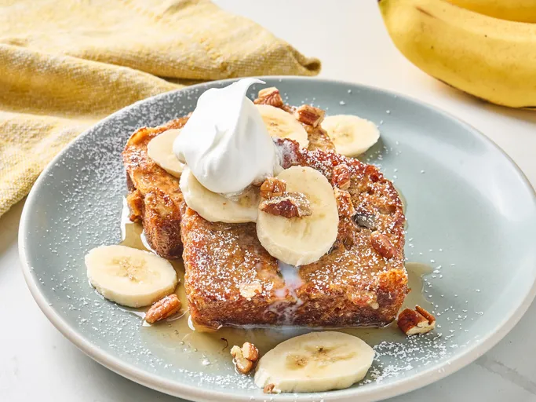

Banana Bread French Toast

Description
Banana bread is used as the base for this delicious French toast variation. Serve with extra banana slices and pecans.
Prep Time: 5 mins
Cook Time: 10 mins
Servings: 4 to 6
Ingredients
- 1 loaf banana bread
- 3 large eggs
- 1 cup milk
- 1/4 all-purpose flour
- 1 tbsp ground cinnamon
- 1 tbsp white sugar
- 1 tsp vanilla bean extract
- 1 pinch salt
- 2 tbsp unsalted butter
- 2 bananas, sliced
- 1/4 cup chopped pecans
- 1/4 cup syrup
- cup conferctioner's sugar
Directions
- Slice banana bread loaf into 3/4 to 1 inch thick slice. Whisk eggs, milk, flour, cinnamon, sugar, vanilla extract, and salt together ina bowl.
- Dip each banana bread slice into egg mixture; alternatively, place slices into a baking dish, pour egg mixture over the top, and let sit for 5 to 10 minutes.
- Heat 1 tbsp butter in a large skillet over medium heat. Toast 3 to 4 slices in the skillet until golden brown, 3 to 4 minute per side; repeat with remaining butter and bread slices.
-
serve immediately with fresh slices of banana, chopped pecans, syrup, and a sprinkle of ocnfectioner's sugar.